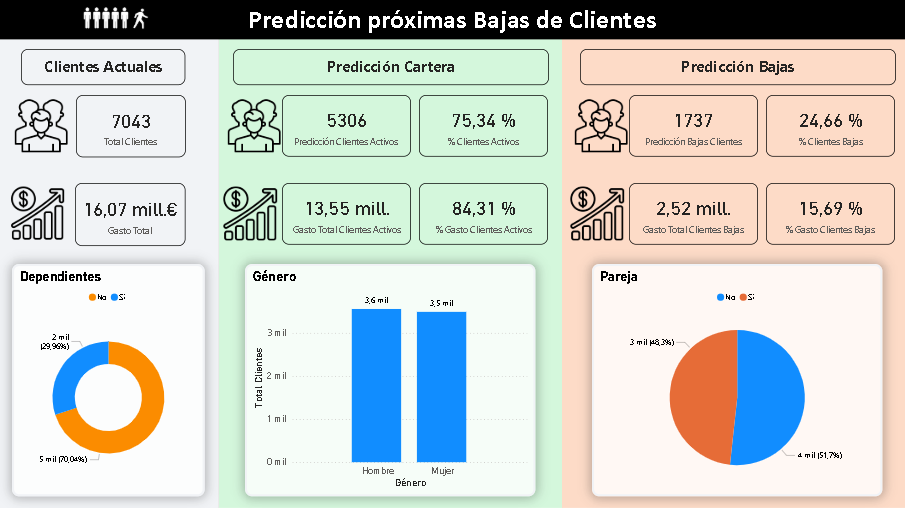
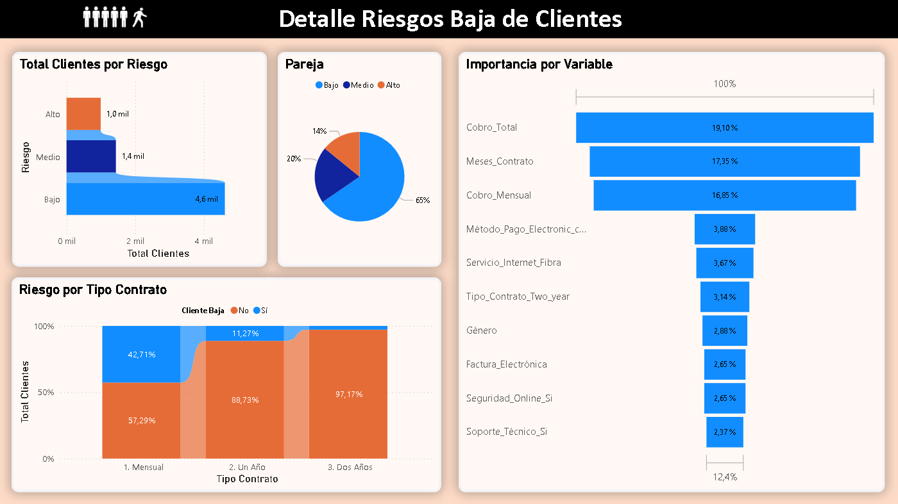

Contexto
Dataset de clientes de una compañía Telco, con información de perfil, servicios contratados, facturación y churn (bajas de clientes).
Objetivo: predecir qué clientes tienen mayor probabilidad de darse de baja y analizar los factores que influyen en su churn.
Objetivos del análisis
- Explorar el dataset y detectar valores nulos o inconsistencias.
- Limpiar y transformar las variables para modelado.
- Entrenar modelos de Machine Learning (Logistic Regression, Random Forest, XGBoost) para predecir churn.
- Interpretar los factores más importantes que afectan la baja de clientes.
- Analizar el impacto del churn sobre la cartera y la facturación.
- Segmentar clientes según su riesgo de abandono.
Estructura del análisis
EDA en Python
- Limpieza de datos, detección de outliers y análisis descriptivo.
- Visualización de variables categóricas y numéricas.
- Proporción de género, tipo de contrato, servicios contratados y distribución de facturación.
Modelado
- Separación de variables independientes (X) y target (y).
- Escalado de variables y codificación de categóricas.
- Entrenamiento de modelos: Logistic Regression, Random Forest, XGBoost.
- Evaluación de modelos: accuracy, ROC-AUC, matriz de confusión.
Interpretabilidad
- Importancia de variables con Random Forest.
- SHAP para XGBoost y análisis de contribución de cada feature.
Predicciones y análisis final
- Probabilidad de churn (Churn_Prob) y predicción final (Churn_Pred).
- Impacto sobre la cartera y facturación.
- Segmentación de clientes según riesgo de abandono: bajo, medio o alto.
Técnicas y herramientas
- Python: pandas, numpy, matplotlib, seaborn, scikit-learn, XGBoost, shap
- Machine Learning: clasificación binaria (churn/no churn)
- Interpretabilidad: feature importance y SHAP values
Principales insights
- Proporción de género equilibrada: 3.488 mujeres y 3.555 hombres.
- Predicción de churn: 75,34 % de clientes seguirán activos, representando 84,31 % de la facturación.
- El 65 % de clientes tienen riesgo bajo de abandonar.
- Variables más importantes: tipo de contrato, facturación, servicios contratados, presencia de líneas adicionales.
Ejemplo de visualizaciones

